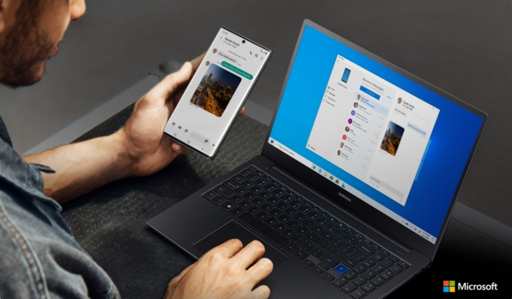
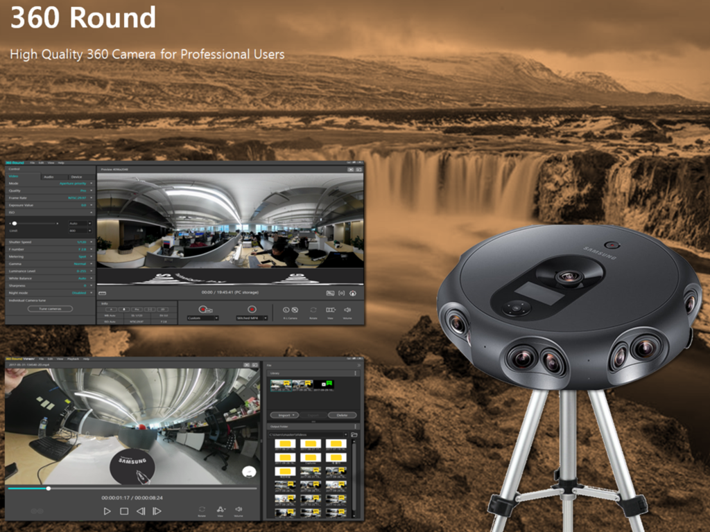
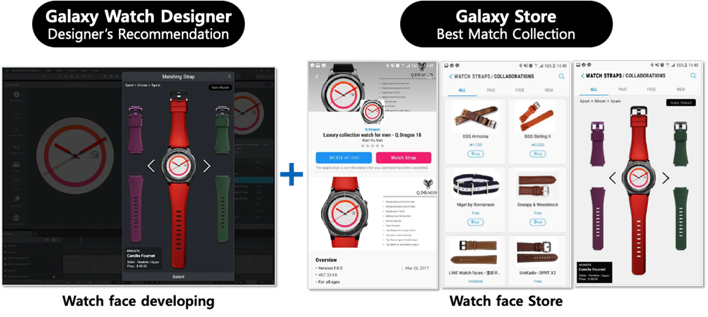
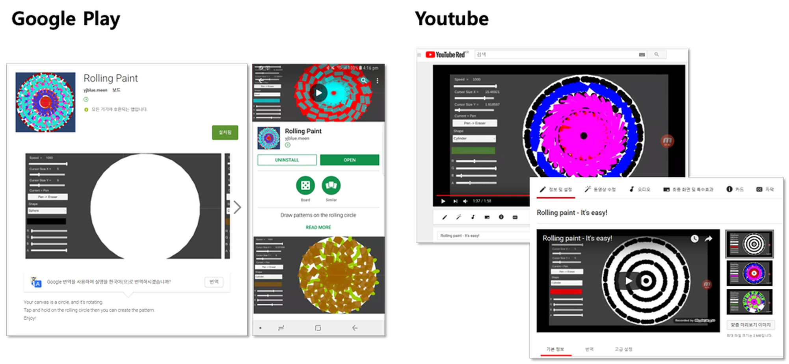
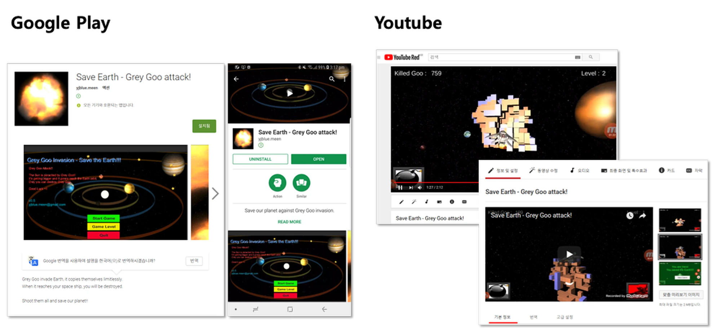

항상 존재감을 드러내기보다, 순간에 맞는 강도로 차분하게 개입합니다.Stay quiet by default and surface with only the intensity the moment requires.
제품 · 협업 · 독립 제작Products · Collaboration · Independent builds
다른 제품과 실험More products & experiments
촬영과 편집 소프트웨어, 폰과 PC의 협업, 그리고 직접 만든 게임까지. 다양한 제품에서 이어 온 작업을 모았습니다.Capture and editing software, collaboration between phone and PC, and games I made. A wider view of the products and experiments behind my practice.
Selected archive
출시 제품, 협업 프로젝트, 독립 제작.Released products, collaborations, and independent builds.
전문가용 제작 도구, 양사 협업, 직접 개발한 게임까지. 서로 다른 사용자와 기술을 다루며 설계의 범위를 넓혀 온 작업들입니다.Professional creation tools, cross-company collaboration, and games I built myself. These projects broadened my practice across different users and technologies.
 최근 프로젝트 · UX 전략Recent project · UX strategyAI Family HubUX 방향 · 신뢰·통제 원칙 · 시나리오 프로토타입UX direction · Trust/control principles · Scenario prototypes
최근 프로젝트 · UX 전략Recent project · UX strategyAI Family HubUX 방향 · 신뢰·통제 원칙 · 시나리오 프로토타입UX direction · Trust/control principles · Scenario prototypes

공개 서비스 협업 · 2019 – 2020PUBLIC SERVICE COLLABORATION · 2019 – 2020Samsung × MicrosoftUX·PM 협업 운영 · 리서치 · 집중 설계UX/PM collaboration · Research · Design sprints
출시 제품 · 2017SHIPPED PRODUCT · 2017360 Round실무 UX · 카메라 UI · Controller · ViewerHands-on UX · Camera UI · Controller · Viewer
미출시 콘셉트 · 2016UNSHIPPED CONCEPT · 2016Strap Studio자동 매칭 · 증강현실 미리보기 · 공동 프로모션Matching · AR preview · Joint promotion
독립 제작 · 2017INDEPENDENT · 2017Rolling Paint유니티 · 디자인 · 개발Unity · Design · Development
독립 제작 · 2017INDEPENDENT · 2017Grey Goo게임 규칙 · 3D 상호작용 · 전 과정 제작Game rules · 3D interaction · End-to-end build출시 · 2017SHIPPED · 2017
360 Round
방송·VR 전문가의 현장 요구를 바탕으로 카메라 내장 UI, 현장 제어용 Controller와 후반 제작용 Viewer의 우선순위를 정리하고, 촬영부터 후반 제작까지 하나의 360° 제품 흐름으로 설계했습니다.Grounded in field research with broadcast and VR professionals, I framed priorities across the on-camera interface, on-site Controller, and post-production Viewer and designed one 360° product workflow from capture through post-production.
역할Role · 실무 UX 디자이너 · 현장 조사 · 카메라 UI · Controller · ViewerHands-on UX designer · Field research · Camera UI · Controller · Viewer
2017 · 출시 제품2017 · Shipped product
- 방송·VR 제작 전문가 인터뷰와 촬영 현장 사용성 평가Expert interviews and field usability tests with broadcast and VR production teams
- 4방향 키만으로 주요 기능을 완료할 수 있는 독립형 정보 구조A self-contained information architecture operable with four-way keys
- 프로토타입, 비공개 베타, 반복 개선을 거쳐 제품 출시Shipped through prototyping, closed beta, and iterative refinement
최근 프로젝트 · UX 전략Recent project · UX strategy
AI Family Hub
공유 화면에서는 한 사람에게 유용한 제안이 다른 가족에게는 불필요하거나 민감한 정보일 수 있습니다. AI가 사용할 맥락, 함께 보여 줄 정보, 사람의 확인이 필요한 순간을 정리하고, 시나리오 프로토타입으로 관련 팀과 제품 방향을 검토했습니다.On a shared display, a useful suggestion for one person may be irrelevant—or sensitive—to another. I used scenario prototypes to examine whose context AI should use, what the household could see, and where a person’s confirmation was needed, then reviewed the product direction with the teams involved.
역할Role · UX 방향 · 신뢰·통제 원칙 · 시나리오 프로토타입UX direction · Trust and control principles · Scenario prototyping
기밀 프로젝트로, 설계 접근 방식만 소개합니다.This confidential project is presented through a limited overview of the design approach.
앱과 정보의 나열보다 가족이 지금 끝내야 할 일을 중심에 둡니다.Keep the household’s current task primary instead of presenting another grid of apps and information.
AI는 준비하고 제안하되, 무엇을 보여 줄지와 최종 결정은 사람이 통제합니다.Let AI prepare and propose while people retain control over disclosure and final decisions.
공개 서비스 협업 · 2019 – 2020PUBLIC SERVICE COLLABORATION · 2019 – 2020
Samsung × Microsoft
삼성과 Microsoft의 UX·PM 협업 창구와 정기 협의를 운영했습니다. 사용자 조사, 집중 설계, 목업 검토를 공통 작업 방식으로 정리해 양사가 같은 사용자 문제와 근거를 기준으로 결정하도록 했습니다.I ran the UX and PM collaboration cadence between Samsung and Microsoft. A shared workflow across research, design sprints, and prototype reviews helped both organizations make decisions from the same user problem and evidence.
역할Role · UX·PM 협업 운영 · 사용자 조사 · 집중 설계 · 목업 검토UX/PM collaboration lead · Research · Design sprints · Prototype reviews
2019–2020 · 공개된 양사 서비스 협업2019–2020 · Public cross-company service collaboration
01
정렬Align
공통 문제와 의사결정 구조를 정의Define the shared problem and decision structure
02
조사Research
양사가 함께 사용할 사용자 인사이트를 구축Build user insight both organizations can act on
03
집중 설계Sprint
워크숍과 목업으로 빠르게 수렴Converge quickly through workshops and mocks
04
통합Integrate
Galaxy와 Windows의 실제 사용 흐름에 적용Integrate the work into Galaxy and Windows journeys
폰과 PC 사이의 메시지·알림·콘텐츠 흐름을 하나의 연속된 경험으로.Messages, notifications, and content moving as one continuous phone-to-PC journey.
Galaxy의 모바일 맥락에 맞춘 생산성 서비스의 진입과 복귀 흐름.Entry and return flows for productivity services in a Galaxy mobile context.
사진과 파일이 기기 경계를 넘어 자연스럽게 이어지는 콘텐츠 연속성.Content continuity that carries photos and files across device boundaries.
Samsung Newsroom · Strategic partnership ↗Microsoft · Partnership expansion ↗
서비스 제안 · 2016CONCEPT · 2016
Strap Studio
워치페이스 구매자·판매자와 스트랩 제작자를 연결해 디지털 콘텐츠와 물리 액세서리를 함께 발견하는 서비스 제안입니다. 데이터 기반으로 어울리는 조합을 추천하고, 증강현실 미리보기와 공동 프로모션으로 양쪽 판매자가 만나는 새로운 접점을 설계했습니다.A service concept connecting watch-face buyers and sellers with strap makers so digital content and physical accessories could be discovered together. It proposed data-driven matching, AR preview, and joint promotion.
역할Role · 프로젝트 기획 · UX/UI · 사용자 조사 · 브랜딩Project planning · UX/UI · Research · Branding
2016 · 미출시 서비스 콘셉트2016 · Unshipped service concept
독립 제작 · 2017INDEPENDENT · 2017
Rolling Paint
회전하는 원판에 점을 찍으면 움직임이 겹치며 패턴이 만들어지는 원리를 유니티 3D로 구현했습니다. 터치 상호작용, 회전 속도와 방향, 펜 크기와 색상 조절부터 테스트와 안드로이드 배포까지 혼자 완성한 첫 게임 프로젝트입니다.I built a Unity 3D drawing game in which marks overlap into patterns as the disc rotates. The independent project covered interaction, speed and direction controls, pen and color behavior, testing, and Android release.
독립 제작 · 2017INDEPENDENT · 2017
Grey Goo
무작위 방향으로 증식하는 큐브, 지구 궤도, 전투기의 이동과 무기 규칙을 설계한 유니티 3D 슈팅 게임입니다. 시나리오와 난이도 체계, 3D 캐릭터, UX/UI, 개발, 테스트와 안드로이드 배포까지 전 과정을 직접 수행했습니다.A Unity 3D shooting game built around self-replicating cubes, Earth’s orbit, and the movement and weapon rules of a fighter craft. I handled the scenario, difficulty system, 3D characters, UX/UI, development, testing, and Android release end to end.